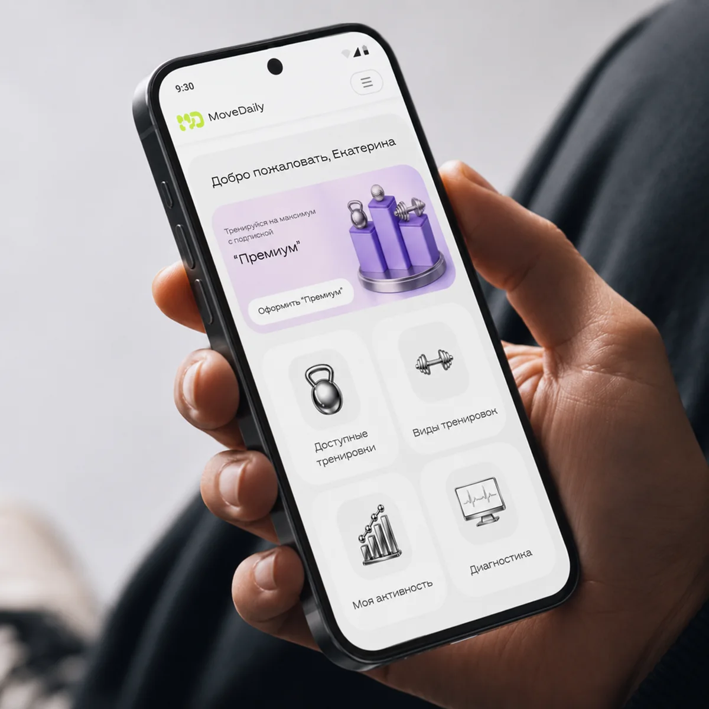
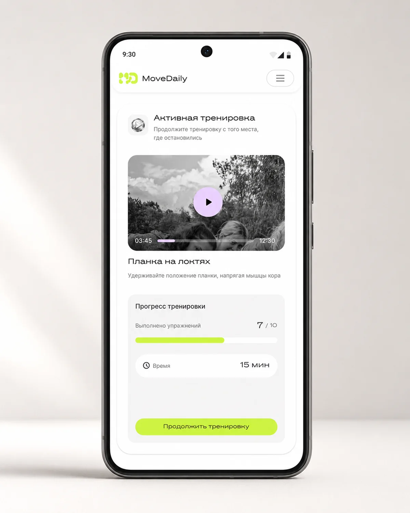
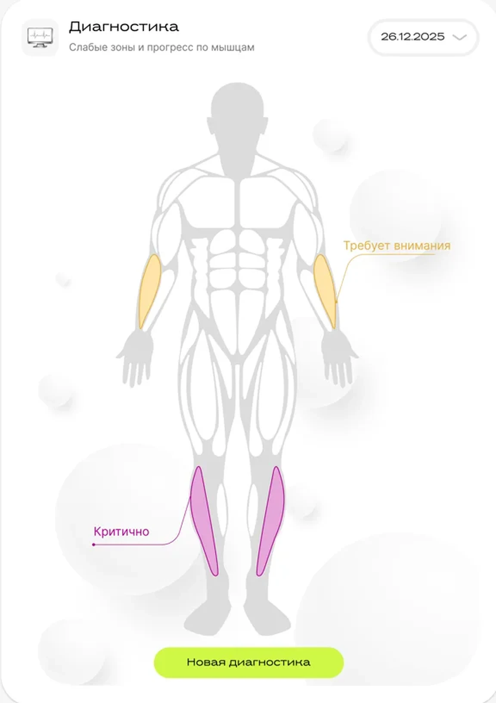
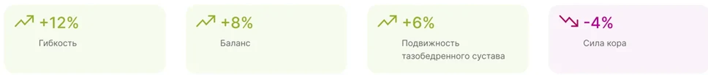

MoveDaily. Короткие тренировки, когда нужно размяться после сна или работы, подготовиться к нагрузке или восстановиться.
Продукт
B2C-сервис персональных тренировок, web для desktop и mobile
Моя роль
Единственный продуктовый дизайнер, от лендинга до передачи в разработку
Статус
Запущен в 2025 году
Проблема
Без тренера человек не понимает, что делать именно сейчас, и не видит, даёт ли практика результат.
Что я сделала
Спроектировала весь продукт: лендинг, вход, личный кабинет, генерацию, тренировку, диагностику, спортивный сценарий, аналитику и подписку.
Результат
Продукт запущен. Момент появления paywall пока гипотеза, план проверки ниже.
Контекст
MoveDaily генерирует короткую тренировку под контекст: цель, уровень, инвентарь и результаты диагностики. Продуктом пользуются три группы людей с разными задачами.
Лендинг объясняет ценность до авторизации
Каждый деньХотят быстро размяться после сна, работы или дороги, не ища упражнения.
СпортсменыНужна разминка, заминка или восстановление под свой вид спорта: бег, зал, йога, единоборства.
Следят за прогрессомВажно видеть активность, зоны внимания и изменения между диагностиками.
Моя зона. Я единственный дизайнер в продукте: сценарии и конкуренты, логика пути от лендинга до подписки, архитектура личного кабинета, интерфейс со всеми состояниями на desktop и mobile, спецификация для разработки.
Путь пользователя
Я проектировала не только личный кабинет, но и вход в продукт. Лендинг объясняет ценность и переводит интерес в первое действие: диагностику, генерацию тренировки или оформление доступа.
Нужна картинкаПуть пользователя одной строкой: Лендинг → Вход → Выбор ситуации → Генерация → Тренировка → Диагностика → Прогресс → Подписка. Под шагами отметить, где появляется блок «Доступ» (после 3 генераций). Плоская схема в серых тонах.
Путь от лендинга до подписки
Сначала ценность, потом регистрация
Альтернатива
Регистрация сразу при входе, без объяснения, зачем продукт.
Решение
Лендинг показывает, что человек получит, и только потом просит авторизоваться.
Почему
Человек, который ещё не понял ценность, уходит на первой же форме.
Ключевые решения
Дашборд как центр продукта
Решение
Главный экран собирает всё, с чего начинается действие: остаток доступа, виды тренировок, активную тренировку, диагностику и активность.
Почему
С любого входа человек за один экран понимает, что делать дальше: продолжить начатое или выбрать новое.

Дашборд: доступ, виды тренировок, активность, диагностика
Ситуация вместо упражнений
Проблема
Новичок не знает, какие упражнения ему нужны, и не должен это знать.
Решение
Генерация разделена на понятные сценарии: свободная тренировка, программа, тренировка по диагностике и спорт. Уровень, инвентарь и формат продукт учитывает сам.
Нужна картинкаЭкран «Виды тренировок»: четыре сценария на выбор (свободная тренировка, программа, по диагностике, спорт) и параметры, которые учитывает генерация: уровень, инвентарь, формат. Скрин из макета, desktop.
Пользователь выбирает ситуацию, а не упражнения
Спорт как отдельный вход
Альтернатива
Спорт как фильтр или тег внутри общей генерации.
Решение
Свой сценарий: вид спорта, затем разминка или заминка под эту нагрузку.
Почему
У спортсмена другая задача, подготовить тело к конкретной нагрузке. Тег не передаёт этот контекст в персонализацию.
Нужна картинкаСпортивный сценарий: выбор вида спорта (бег, зал, йога, единоборства) → разминка или заминка → готовая тренировка. Три экрана подряд или флоу-схема.
Спорт: вид нагрузки → разминка или заминка
Тренировка как управляемый сценарий
Решение
Видео упражнения, таймер, сторона тела и прогресс по упражнениям на одном экране. Прерванную тренировку можно продолжить с того же места.
Почему
Человек в процессе не читает: ему нужно видеть, что делать сейчас, сколько осталось и что дальше.

Тренировка: видео, прогресс, время
Мягкий paywall после трёх генераций
Варианты
Paywall на регистрации, после одной генерации, после трёх, по времени. Сравнивала по риску для активации и силе повода оплатить.
Решение
Три бесплатные генерации. Блок «Доступ» показывает остаток 3 → 2 → 1 → 0 и в нуле ведёт к подписке. В спецификации семь состояний доступа, включая истёкшую подписку.
Почему
Три генерации дают пройти всю петлю ценности: выбрать ситуацию, получить и сделать тренировку. Одной мало, чтобы почувствовать пользу, при семи пропадает повод платить.
Блок «Доступ»: остаток 3 → 2 → 1 → 0 и подписка
Диагностика связывает тренировки и прогресс
Решение
Диагностика показывает зоны внимания на схеме тела и становится основой для тренировок по диагностике.
Сравнение
Две диагностики можно сравнить по датам и увидеть, какие зоны стали лучше, а какие требуют внимания.
История
Календарь показывает не отдельную тренировку, а регулярность за месяц, и поддерживает привычку.

Зоны внимания Проблемные зоны отмечены прямо на схеме тела.

Что изменилось Сравнение двух диагностик в процентах по каждой зоне.
Аналитика: зоны внимания и активностьСравнение двух диагностик по датамИстория: регулярность за месяц
Что ещё не проверено
Самое чувствительное место продукта — граница между бесплатным и платным. Момент и формулировку перехода к подписке на живых пользователях пока не проверяли, это гипотеза.
ГипотезаЧеловек платит после того, как хотя бы раз получил результат. Поэтому paywall стоит после первой ценности, а не на входе.
Как проверитьA/B-тест момента paywall: после одной и после трёх генераций.
Что смотретьКонверсию из третьей генерации в оплату и уходы на экране «Доступ ограничен».
Что ушло в продукт
3группы пользователей со своими сценариями входа
3бесплатные генерации до подписки
7состояний доступа в спецификации, включая истёкшую подписку